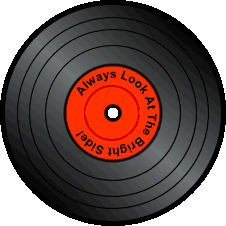

The Piper and the Cosmic Mind
by George Singer
Biblioteca Musical
Proceso Creativo
I'll See You On The Dark Side
the Moon piper
Últimos Lanzamientos
Diario de Producción y Reflexiones
Ninguna pista seleccionada
0:00
0:00
Volumen:
Ninguna Pista
0:00
0:00
